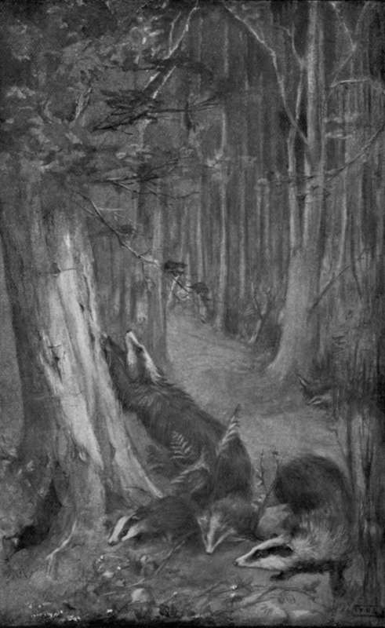

Haunts Of The Badger And The Fox. Part 2
Description
This section is from the book "Creatures Of The Night: A Book Of Wild Life In Western Britain", by Alfred W. Rees. Also available from Amazon: Creatures Of The Night: A Book Of Wild Life In Western Britain.
Haunts Of The Badger And The Fox. Part 2
With regard to the badger's habit of staying for some time in the doorway of his home, it may be mentioned that years afterwards, when one night I compared my notes with those of a companion who had hidden near the main opening of the "set" while I had watched by a hole higher in the wood, I found that each entrance had, simultaneously and for long, been occupied by a vigilant badger; and, as both animals were full-grown "greys," I concluded that parent badgers not unusually took ample precautions against surprise before allowing their cubs to venture out into the night.
Once away from the " set," the old male badger seemed to lose suspicion of any obnoxious presence. Then, lumbering after him, every member of his family would appear in full view on the mound, and, with little fits and starts of pretended rage and fright, would roll over and over each other, rush helter-skelter back to the underground dwelling and out again, and round and round the tree-trunks. A favourite trick, indulged in by young and old alike, was that of raising themselves on their hind-legs close beside a broad beech-trunk near the "set," and then, on tip-toe, stretching out their fore-claws to the fullest extent and scratching vigorously at the bark.
This trick irresistibly reminded me of an incident connected with a shooting expedition to the moors, when, one evening, after much gossip in the ingle-nook, I accompanied my jolly host to the barn, and there, much to the merriment of all concerned, acted as judge, while, by the light of a lantern, the farmer measured and recorded the height of his wife, as well as of each of his six children and his servants, against the oaken door-post, and finally insisted that he himself, a veritable giant, should submit to the test, and gave orders for a chair to be fetched that "mother," a stout little woman of some sixty inches in height and, also, in circumference, might mount to the level necessary for "chalking his mark".
One day a keen naturalist and sportsman, whose acquaintance I had recently formed, proposed to join me in my vigil near the badger's home. In the declining afternoon, we left the village, crossed the bridge, and made a detour of the river path. As we passed along, I showed him an otter's " holt" under a shelving bank, where, on the fine, wet sand, the prints of the creature's pads were fresh and clearly outlined. We then visited an " earth " within the wood, in which dwelt a lonely old fox I had often watched as he stole along the rabbit-tracks towards the Crag of Vortigern; and there I pointed out how crafty Reynard, having selected a convenient rabbit burrow, had blocked up every hole — but one, in a thick clump of brambles—with soil thrown out in digging, and how the grass and the ground-ivy had luxuriantly covered the bare mounds, and so encroached on the fox's winding track through the wood and about the bramble clump, that even to an experienced visitor the only fox-sign likely to be detected was in the loose arrangement of the bents and the twigs by the arch of the run-way as it entered the thicket.
Rabbits, as well as water-voles and field-voles, are particularly careful to nibble off wind-blown or sprouting twigs that encroach on their tracks through the undergrowth; but foxes, otters, and badgers simply brush them aside as they pass.
The sun had not yet gone down when we arrived at the "set." I had planned an early visit, so that my friend might have an opportunity of examining the much frequented track-ways, the footprints of the badgers on the soft earth of the mound, and the scratches on the tree-trunk where the badgers had sharpened their claws and incidentally measured themselves. These numerous claw-marks were especially interesting, and, on a certain tree by the "set," they formed irregular lines extending from a foot above the ground to a height of three feet or rather more. The lowest scratches had been made by the cubs seated on their haunches and facing the tree; a little higher, the marks were those of the parent animals while in a similar position; after a space in which a few abrasions occurred, the marks showed how the cubs had gradually grown till they could reach within a few inches of the clear, deep furrows scratched by the old male badger as he measured his full length against the tree.
"HE MEASURED HIS FULL LENGTH AGAINST THE TREE." (See p. 419).
[To face p. 418].
After making observations with the utmost wariness, we hurried away, so that, before dusk, our scent might evaporate, and become almost imperceptible in the vicinity of the principal entrance to the lonely burrow.
After a second ramble by the riverside, we returned in the face of the wind, and at twilight began our silent watch. A robin sang plaintively from the hawthorns on the outskirts of the wood; the rooks sailed slowly above us, and then, gossiping loudly of the day's events, congregated around their nests in the great elms dimly outlined against the pearly southern sky; the wood-pigeons dropped one by one into the beech-trees near us; and a jay, uttering his harsh alarm, hopped in and out of some young hazels fringing the glade beyond the " set." Presently, a brown owl, in a group of tall pines near the little rill that made faint music in the woods, began to mutter and complain, in those low, peculiar notes that are often heard before she leaves her day-time resting place. Then no sound disturbed the stillness but the far-off cawing of the rooks, and the only creatures visible were some rabbits playing in the moonlit glade, and a glow-worm shining with her soft green light on a bramble spray within my reach.
Nearly half an hour passed by, and no sign of life came from the badgers' home. Then the familiar white and black striped head, framed in the darkness beneath the gnarled tree-root, suddenly appeared, and as suddenly vanished. Another half-hour went by, and yet another, but no further sign was given. My companion, unused to such a long vigil, shifted uneasily, and protested that he was tingling with cramp and longing for sleep; presently, unable to endure his discomfort, he arose, and stretched his limbs before settling down again amid the briars.
Continue to:
- prev: Night In The Woods. I. Haunts Of The Badger And The Fox
- Table of Contents
- next: Haunts Of The Badger And The Fox. Part 3